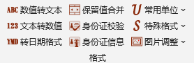
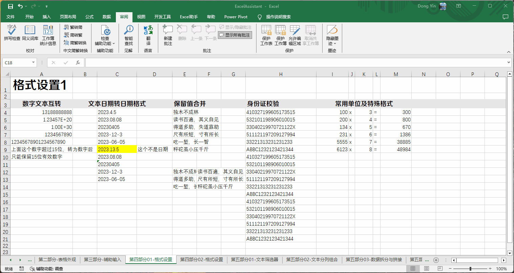
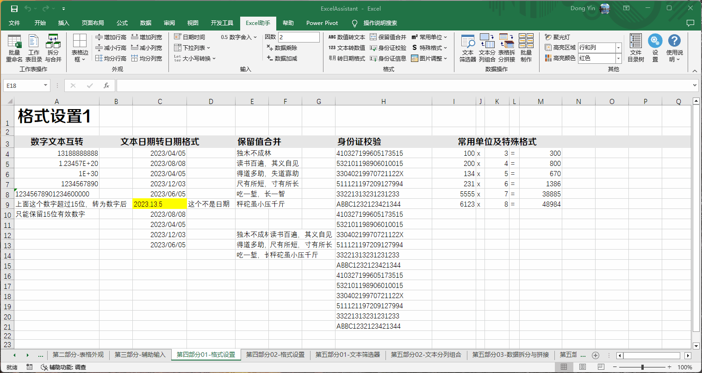
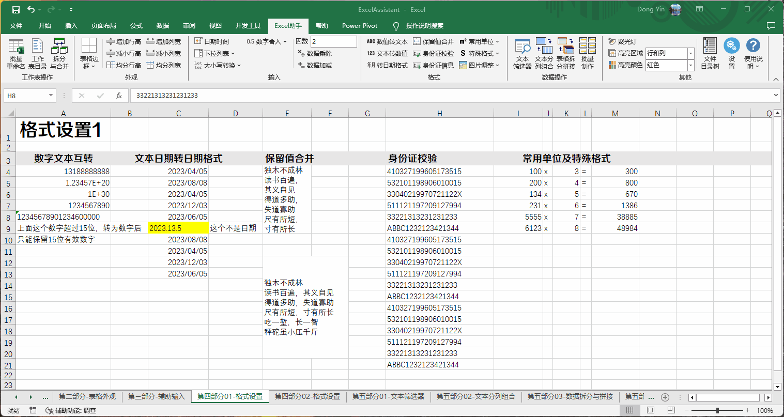
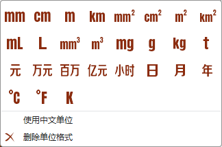
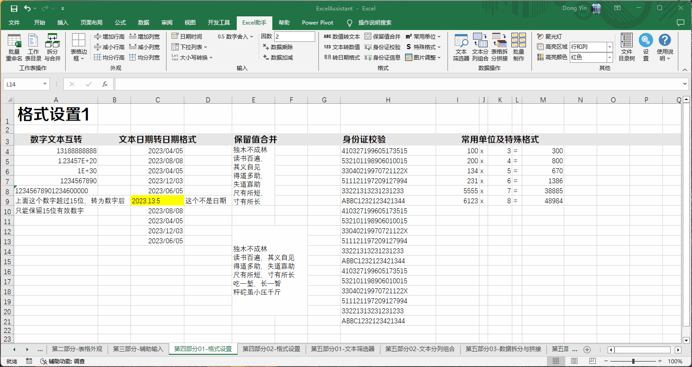
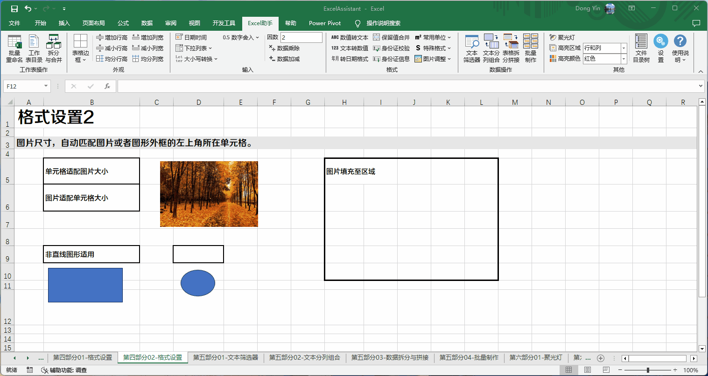

Excel助手Ribbon菜单中如下区域用于设置数据格式，主要为数值、文本、日期类型的转换，保留值合并以、身份证号码验证、设置单位以及图片设置。
该功能可将选中单元格中数值类型的单元格转化为文本格式，或将一串数值类型的文本转化为数值。需要注意的是，Excel数值型数据最大有效位数为15位，超过的位数将被忽略为0。例如输入身份证的18位数字时，如被Excel识别为数值，则Excel已经将其转为科学计数，并将后3为截掉，即使通过本功能转回为文本类型，也将丢失最后3位，转回文本的后3位用0填充。
该功能的主要目标为，将单元格内文本格式的非标准日期格式转化为标准日期格式，以及被显示为数值的日期恢复为日期格式。 非标准的日期格式包括YYYY.M.D，YYYYMMDD等这些类型样式，同时程序将验证是否为正确的日期，例如2024.13.20，并不能转为日期格式，因为其不是正确的日期。
数值文本转换以及日期转换示例：
该功能可保留合并单元格内的值并转化为文本格式，存放在合并后的单元格内。原每个单元格的值均占用一行，根据Excel的限制，单元格内最大的换行数量不应大于253，即合而为一的单元格数量不应大于253个。选中范围内合并的方向为先行向后列向。
保留值合并示例：
该功能可以验证18位中华人民共和国居民身份证，验证包括格式验证，1~6位地址码，7~14位生日码，以及第18位的校验码四个部分的验证，由于身份证地址码验证基于2022年数据，对于年份较早，地区名称有变更等情况，地址码验证未通过，并不代表身份证号码有问题，可通过本程序加载项设置打开或者关闭地址码验证。验证未通过的单元格将已标注形式提示，通过的则不做任何标记。身份证信息功能为根据身份证号码提取地区信息，生日信息以及性别信息。
身份证验证示例：
如下图，可为选中的数值型单元格添加一个带单位显示的格式，或删除单位格式。
常用单位及为选中单元格数据添加一个包含单位的格式，该单位内容属于格式显示范围，不影响单元格的数据计算。使用中文单位选项勾选的情况下，对于英文单位，mm将显示为毫米，诸如此类，本身即为中文的单位不受影响。单位只能为数值单元格添加，将忽略选中范围内的字符格式及日期格式的单元格。
删除单位格式为删除通过本程序添加的单元格式，其他自定义的单元格式无法被程序识别。
特殊包括隐藏格式、*掩码格式和大写中文数字。 隐藏格式为从格式上设置该单元格不显示任何内容，但单元格的值仍然存在，不影响引用计算。*掩码格式为将单元格中任何内容均显示为*填充，类似密码输入框，但单元格的值仍然存在，不影响应用计算。大写中文数字即为Excel单元格格式设置中的特殊格式-中文大写数字。若要恢复显示，请在Excel中将单元格格式设置为"常规"或原来的格式。
常用单位及特殊格式示例：
该功能可以将图片大小修改为单元格尺寸，或者将单元格大小修改为图片尺寸。将图片大小修改为单元格尺寸，则图片的纵横比例将解锁，图片内容可能存在变形问题。该功能适合单个图片、文本框以及自动图形（例如：矩形，圆形等）。该功能总是以图片所在左上角单元格作为图片所在单元格（所谓左上角单元格，对于矩形类物体显而易见，但是对于圆形，或者异形形状，需要以选择后出现的矩形边界作为左上角的判断基础）。当将图片放置到一个所选区域的时候，选择整列或者整行范围，会引起尺寸超出界限。图片与单元格边框间距在0~10磅范围内可以调整，通过本程序的加载项设置修改。
图片大小调整示例：
使用上述功能需注意如下事项：